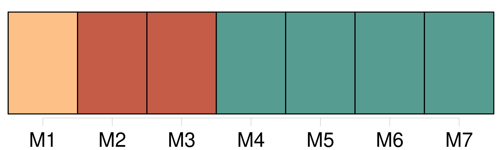

Longueur nb maillons : 13 mentions |
 |
Douce et modeste, instruite et spirituelle, rien ne pouvait éclipser Marianina si [ce] n’ était [sa mère] [13 phrases] La beauté, la fortune, l’ esprit, les grâces de ces deux enfants venaient uniquement de [leur mère] [3 phrases] La réserve que monsieur et [madame de Lanty] gardaient sur leur origine, sur leur existence passée et sur leurs relations avec les quatre parties du monde n’ eût pas été longtemps un sujet d’ étonnement à Paris. [32 phrases] Filippo, Marianina, [madame de Lanty] et un vieux domestique avaient seuls le privilége d’ aider l’ inconnu à marcher, à se lever, à s’ asseoir. [9 phrases] Si [madame de Lanty] n’ était pas là, le comte employait mille stratagèmes pour arriver à lui ; mais il avait l’ air de s’ en faire écouter difficilement, et le traitait comme un enfant gâté dont la mère écoute les caprices ou redoute la mutinerie. [31 phrases] J’ avais amené cette jeune femme au bal de [madame de Lanty] [48 phrases] A ce bruit, Marianina, Filippo et [madame de Lanty] jetèrent les yeux sur nous, et leurs regards furent comme des éclairs. [7 phrases]
Pourquoi [madame de Lanty] laisse-t [-elle] errer des revenants dans [son] hôtel? [27 phrases]
un parent de [madame de Lanty] [511 phrases]
Vous devez concevoir maintenant l’ intérêt que [madame de Lanty] peut avoir à cacher la source d’ une fortune qui provient … |

|
Il est possible de télécharger la ressource sur la page Ortolang |
Si vous avez des questions ou vous voyez des erreurs, merci d'envoyer un mail à silvia.federzoni89@gmail.com |